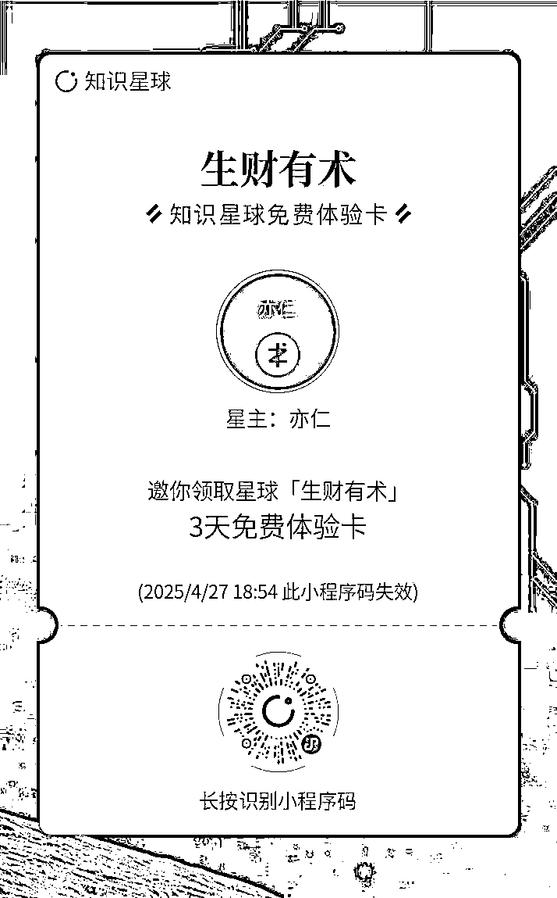

来源：https://shengcaiyoushu01.feishu.cn/docx/Uy5JdWiFPoyYnCxju0hchVTEn2e
生财第 9 年 418 拉新百问百答手册包含
分销手册链接：
🧭 4月底：新人融入营开启
3 天带你快速上手生财玩法，熟悉社群规则与资源，开启高效链接。
📦 5月初：《生财宝典》寄出
种草官邀请的新会员将陆续收到宝典，详细介绍见：https://t.zsxq.com/S6pVc（种草官邀请的都会寄送）
🤖 5月初：AI传术师持续招募中
新会员符合标准即可申请入群，参与最前沿的AI实战学习：https://t.zsxq.com/zyRat
🤝 5月初：全国各地新人引导局陆续开启
老圈友发起“新人接财、老人传术”主题线下局，快速建立圈内人脉。
🌊 5月中下旬：第9期航海报名开启
围绕AI、出海、IP等19条航线，5月底正式实战起航，带你边学边实战，跑通项目闭环
🎁 5月20日：520会员日福利来袭
月度会员日活动，一起开启生财浪漫！带给大家福利和惊喜。

使用范围：仅面向非生财有术圈友，每人仅有一次免费领取资格；
使用权限：领取后，可免费查阅近 180 天生财有术所有内容，查阅时限为 3 天
圈友可以直接分发“知识星球免费体验卡”，邀请意向用户扫码，即可直接进入星球进行体验。
用户体验后，记得分发你的分销二维码，做好后续跟进。

手机打开：https://scys.com/mobile/mine/experience
生成体验卡二维码（对应二维码加了埋点，后续我们可以跟踪加入绑定关系）
亦仁强调：再多的描述也不如自己亲身体验和感受。
1 超级标，一定要看。
超级标可以说是亦仁严选超级赚钱机会。亦仁说超级标是他会负责的赚钱情报，提出来就确保确实有不卷，但一年有机会赚到100万的机会。第9年也会挑战发布50个超级标，对于大家来说是明确的赚钱项目。
2 跟着5月航海实战参与起来，目前可以先看航海手册，选一个自己感兴趣的赛道把近一年的看一遍：比如AI的航海手册有，IP的航海手册有，航海手册链接在这里：
3 线下组局，多参与感兴趣的同城组局，在小圈子里拿信息。
这三点是亦仁对于担心生财信息太多，会焦虑的新用户的建议。
最重要的是找准一个自己感兴趣的方向，往深处做：
1.打开“生财有术”公众号，把里面1009篇文章全部阅读一遍，不求甚解。
2.打开scys.com 官网，输入上一步中自己有感觉的关键词，可以找到一切。
3.打开scys.com 看航海手册，里面的每个内容都是外面大几千的课
1.打开scys.com 看航海手册，里面的每个内容都是外面大几千的课
2.看生财有术榜单的全部精华帖。生财有术年度榜单
3.尽快参加周边的生财线下见面活动
我自己把生财有术，当做图书馆，分门别类建立了很多知识库，根据我的经验，大家可以这样用：
1.迷茫阶段(无项目，暂时也不找项目）：多看风向标，以一个信息差开始，目标：找到适合自己的一个信息差即可
2.入门阶段（计划找项目，关注小红书或AI等赛道）：多看生财小组，目标：把一个细分领域的知识输入自己的脑子
3.实操阶段（做项目，正在尝试初期）：单独选择1~3篇精华帖，按照步骤执行，目标：执行精华帖的步骤，验证这个细分领域的项目是否可以变现
4.深度实操阶段（做项目，但遇到卡点）：参与航海实战，跟着21天实操，目标：对某个细分领域查漏补缺，完整自己的知识体系和实操SOP
5.资源积累阶段（项目已经跑通，希望找合作方等等）：参加线下聚会，或者付费加入航海家，目标：拓宽自己的人脉，寻找某运营的合作方，获得投资方等


预计会在五一之后，5.10前发货，到时候鱼丸会邀请大家来填写地址哈。记得提醒新圈友扫码添加鱼丸噢，后续我们也会做好一整年的交付
什么是生财有术版的纳瓦尔宝典？
这是生财有术特别制作的实体手册：
这本书体现了生财有术的人脉资源，集合了100位真正赚过钱的人分享的宝贵经验。
生财有术从以下几个方面帮助用户抓住AI机会：
除了已上线的AI读精华和AI拆解风向标功能外，生财有术还将推出多项AI新功能：
问：什么是AI Agent，生财有术如何应用？
AI Agent是能够自动执行重复工作流程的智能体。生财有术正在开发风向标AI Agent，它将：
生财有术在过去一年定下了垂直化战略，聚焦了几个核心板块：
1.AI板块：重点发展方向，包括AI工具应用、AI创业等
2.出海板块：包括YouTube、AI开发网站、应用开发、FILA、流量获取等
3.IP板块：包括自媒体、知识付费、虚拟产品等，适合普通人低成本获取流量
4.新流量/平台流量板块：包括视频号、小红书等平台，未来2-3年仍有很大机会
5.电商板块：虽然竞争激烈，但仍是普通圈友入门的好项目，门槛低
问：如何在生财有术获取垂直领域的知识？
在生财有术官网的"小组"板块，可以找到围绕各垂直板块整合的大量内容。只要把一个板块内容看完，就能成为该领域的相对专家。这些内容都是来自一线实战经验的分享。
链接：
超级标是亦仁亲自认证的、可以领先行业半年的优质机会。它是生财有术风向标体系的一部分：
超级标对所有圈友开放，免费查看。不需要额外付费。
在生财有术官网的"官方专栏"中可以找到。
亦仁和团队会持续挖掘各个行业领域的真正好机会，分享给圈友，大家可以一起期待。亦仁今年立下flag，计划发布50条超级标。
风向标：https://scys.com/opportunity
风向标是指商业情报、机会和线索，生财有术团队会从各平台收集并精选这些信息。
通过AI拆解风向标功能，用户可以更好地理解背后的商业机会。
这一功能未来会进一步发展，成为用户的"AI商业私教"，帮助培养商业嗅觉和判断力，这是每个人面向市场的真正底气。
亦仁分享了一个重要理念："先相信"：
亦仁强调：
什么是生财有术的航海模式？
链接：https://scys.com/activity
航海实战是生财有术独创的一种训练营模式，带领圈友亲身入局体验项目：
生财有术的航海完全免费，只收取99元或199元的保证金，目的是帮助圈友把注意力集中在项目上。平均约90%的保证金会退还给参与者。亦仁强调，保证金机制不是为了赚钱，而是为了帮助圈友专注，因为"所有竞争最后都是注意力的竞争"。
航海正在向两个方向演变：
1.Mini航海：
2.深海圈：
在某鱼购买共享网盘形式的内容存在几个问题：
1.体验极差：使用体验非常糟糕
2.注意力问题：当你只花几块钱购买内容时，根本不会重视这些资源。很多人花几块钱买了几十G的网盘，却从未真正去看，因为觉得这些内容廉价，随时可获取
3.社群价值缺失：生财有术是一个社群产品，不仅仅是课程或知识付费。你购买的是：
当你真正融入这个社群，与里面的人、事、信息产生链接和交互时，才能获得真正的价值。我们设计了各种线上线下的产品和服务，都是为了实现这个目的。
生财有术坚持"对老朋友越来越好"的原则，具体表现在：
1.老圈友的续费价格会有特别优惠
2.老圈友可以享受更多专属服务和权益
过去一年，生财有术经历了很多变化，也反思并纠正了一些问题：
1.社区规则调整：
2.内容质量提升：
对于因这些原因离开的老圈友，我们欢迎你回来，看看生财的变化、内容和航海，感受一下是否还是以前的味道。如果三天内不满意，可以0风险全额退款。
问：生财有术是一个什么样的社区？
亦仁分享了生财有术的社区风格和价值观：
问：生财有术有什么独特的文化？
生财有术最独特的文化是真诚分享：
亦仁认为，在人生不断前行的路上，周围的同行者也在不断变化，找到适合当下阶段、与你目标、期望和价值观相符的同行者非常重要。
为什么加入生财一年，参与了几次航海，但还没赚到钱？
这是非常正常的现象：
亦仁建议调整心态：
成长是曲线而非直线
人生是指数曲线
问：做项目一段时间没有反馈，是该放弃还是坚持？如何选择能快速获得反馈的项目？
亦仁的建议：
亦仁强调：只要方向是对的，持续行动和提升，百分之百能赚到钱。
执行力是一个伪命题：
亦仁是如何提升执行力的：
亦仁建议：
生财有术开启第 9 年，可以扫码加入啦。
生财有术是一个务实、接地气的赚钱机会分享与创业交流社群。创建于2017年，连续8 年，续费率位列知识星球头部。目前已运营至第9年，累计付费会员超70000 人

这里每天都在产生各种赚小钱和赚大钱的机会，各行各业的实战高手汇聚在这里分享交流一线经验，还有丰富的实战活动供你下场行动切磋。
有人说，生财有术是“赚钱领域的黄埔军校”。这里会通过赚钱信息、航海实战和链接活动，帮助圈友们提升认知、开阔眼界、参与实战、拿到结果。


很多人都会问到一句话：生财有术能给用户提供什么核心价值？
亦仁在上周直播中分享了关于圈友"紫菜"的故事，紫菜是生财有术的一位资深圈友，他通过从生财有术挑选优质项目，交给自己的团队去复制执行，每个团队基本能实现七位数收入。
紫菜分享生财提供的核心价值有两点：
1.信息筛选：在信息过载的时代，帮助筛选出真正值得关注和投入时间的信息
2.信心/相信的力量：由有结果、有权威的人提供信心支持，让执行者相信"做这个一定能成"
生财有术正是通过这两点为圈友提供价值：一方面有智囊团帮助判断哪些信息值得关注，另一方面有拿到结果的大佬提供信心支持。
近期在生财有术官网 (https://scys.com) 上线了不少AI能力，帮助大家节省时间、提升理解、拓宽视野的 AI 能力。
包括但不限于：
1）已经上线：AI 精华速读，AI 智能拆解风向标
2）规划上线：AI 精华播客、AI 精华问答、AI 精华知识卡片、AI 导图、AI 搜索、AI 手册问答等
3）讨论中的：风向标 AI Agent、AI 商业私教、AI 汇总日报周报月报等
以及帮助生财AI应用能力比较强的圈友，更好实现商业价值放大：
1）AI 传术师俱乐部：
聚集生财有术及全网最优秀的 AI 实战派，反向赋能生财有术的内容、赚钱机会及案例的涌现。
2）AI MCN：
通过广告主的聚合及创作工具的开发，帮助生财有术成长起来的AI自媒体和IP，放大商业价值；和生财做 AI 产品的圈友形成联动，产品和渠道互相结合。
3）SCAI 实验室：
在线下聚集，孵化一批真正做 AI 出海产品的圈友，期待做出具备世界级影响力和行业价值的 AI 产品。
4）生财 AI 学堂：
通过线下培训、企业咨询、线上实操营等方式，帮助一批 AI 实战派，分享知识并获得商业价值。
X+AI 应该是大部分，有自己业务圈友的核心战略之一，生财在这一块也在加速。
生财认为AI不是选择题而是必选题，应该是"万物加AI"的思路。
无论是企业老板还是上班族，都必须将AI与自己的业务或工作结合起来。生财有术正在加速前进，帮助圈友更好地学习、理解和应用AI。
1.社区里都是真诚利他的人
会分享做项目过程中的成功经验、发现的机会，甚至失败和踩坑经历
用户分享的动机是因为他们在这个环境中受益，愿意回馈社区。
2.共同创造和成长：
生财过去一年有39218篇帖子，19844条风向标，19374篇帖子，1740个风向标，955篇精华帖，近百个被验证过0-1的赚钱项目。我们瞄准的很多业务和赛道都很大（如抖音、视频号、小红书、AI等）这些领域一个人是干不完的，个体只是千万分之一，有一个圈子和一帮人一起做，不仅不会影响你的业务，反而会加速你的发展。
生财有术还有"生财思维课"，讲解做项目赚钱时的常见误区，以及应该用什么样的思维去学习才更好。
3.生财有术现在是一个纯净的社区：
对标题党、引流党进行严格管控，不欢迎动机不纯的人，会封号处理
亦仁解释了生财圈友分享赚钱机会的心态：
1.当你眼里没有赚钱机会时，一个机会就像救命稻草，不愿分享
2.但在亦仁眼里全是赚钱机会："我刷半小时抖音，就能发现几十个可以做的赚钱机会"
3.对于目标很高的创业者（如追求年收入八位数、九位数），不影响他们分享那些一年能赚百万级的机会
4.看见机会是一项能力，一旦这种分享氛围形成，就变成了社区文化
在生财有术社区：
1.如果有人在交流中藏着掖着，大家会感受到"这个人身上没有生财味"，这样的人会慢慢被社区隔离，最终社区里的人都是"有生财味"的人，都是愿意分享的人
2.越是愿意分享的人，越能接触到更高层级的人，比如像生财传术师群体，会形成各种跟生财的深度合作，形成良性循环
亦仁总结了几类特别适合生财有术的人群：
1.动手能力强的人
比如产品经理、开发者、独立开发者
只要有对的信息和方向，他们就能发展得很好
程序员、产品经理、互联网从业者都非常适合
2.做IP的人
做自媒体、知识付费、虚拟产品的人
因为生财有术本身也是知识服务产品
社区沉淀了大量文档内容和会员交流
3.自由职业者
特别是一个人在家、方向不清晰、没人交流的自由职业者
生财有术有大量自由职业者，可以获得共鸣和交流
4.互联网从业者
包括设计师等所有互联网从业者
因为亦仁和团队都有互联网基因，思维方式带着互联网思维
5.小公司老板
十人以下团队的老板和合伙人，相当于花几千块买一个情报库和认知库，可以通过别人的经验少踩坑，一个错误决策可能亏几十万甚至几百万，而在生财有术看几篇精华帖就能具备行业基础认知。
6.大厂中层
月收入几万的大厂中层可以给自己一条新的选择，了解副业，结合自身能力选择适合的副业，慢慢将副业变成主业，拥有真正的职场底气，这种底气反而会让职场表现更好，因为可以独立思考与老板讨论
"真正的职场底气来源于你有能力随时可以炒你老板鱿鱼"
7.大学生
时间多，可以做很多尝试，试错成本低，很容易从航海手册快速实干起来，赚到第一桶金，像小鹅，书虫，更绪，辛亥，汤姆cc等00后都是在生财成长起来的。
👉 因为现在是生财有术的 9 周年，年费直降600元，只要 2765元，还送实体《生财宝典》，这本书是前1w名专属福利。
👉 如果你是老朋友，还能 续费只要1659元（6折），可以说是全年最划算的时机了！
👉 前1万名还能免费拿到《生财宝典》——汇集100位高手项目经验，纸质版，只送不卖！
⏰ 限时开放时间：4月18日晚上8点 - 4月25日晚上8点
19个选题围绕着AI，出海，IP，小红书，视频号等垂直赛道持续深耕。
长期大空间高价值的选题继续延续，新的机会和玩法也补充了不少。
这些选题都能在 5 月开船前抢先报名，今天加入，抓住先发优势。
1.项目多、落地强
每年有 8+次“航海”集训营，围绕热门领域：AI / 出海 / 小红书 / 视频号等
每次航海都产出完整手册，能快速学会“怎么从0-1跑通一个项目”
即便不参与航海，手册也可以复盘实操项目，随时看
2.信息密度高、更新快
过去一年生财有3万多篇帖子，955篇精华帖，1740个中标
每天至少更新 50+条真实项目情报
不再需要自己刷全网信息，这里直接筛选好了，直接跟着圈子走就能看到趋势和机会
3.圈子强、交流多
平台上有 小红书操盘手、出海探索者、跨境出海、AI实战派 等高手活跃
每周都有同城聚会，不仅包含北上广深杭，还有各种三四线城市，今年也会大力发展同城聚会，在线群交流也很活跃，不再一个人瞎琢磨
4.理念清晰，利他实干，对社群共建者真诚靠谱，愿意给予
不追求暴富，而是长期陪你拆项目、跑通项目
有很多大佬和牛人已经开始“反哺社区”，每年输出近1000篇精华帖和航海项目总结
社区强调利他真诚分享，对于社群共建者，会有龙珠，术值等虚拟权益激励，也能跟大佬交流互动。
👇如果你或者身边的朋友 还有担心的点，我还可以告诉你以下几个信息：
1.加入生财3天无理由退款，可以提前进圈看看环境和氛围，觉得不值再退也不迟。
2.生财使用指南知识库，今年生财最懂实战最会手把手教你做项目的传术师群体，做了《生财使用指南》，你可以带着身边的朋友高效使用这个平台
生财有术使用指南链接在这里：
2700 元一年，200 元/月，其实是一顿饭的钱，但有机会打开一整年的赚钱逻辑。是一个下限很确定，但是上限无限高的选择。
赚钱是认知+项目+圈子的结合，这里最重要的是教你“看得懂、做得出、跑得通”。而且你加入的第一年大概率赚不到钱，但只要你的行动力和认知持续提升，肯定能提升你赚钱的效率。
赚钱是要学会靠近一帮真正爱赚钱爱搞钱，不吝于分享的圈子，圈子的变化带来愿力的变化。为什么生财社群能出来像紫菜，刘小排，黄小刀，陈雪这样人，他们拿到结果肯定是有原因的，哪怕一年认识10个这样的人，未来这种人脉的无形资产是很难衡量的
最后再强调下：
即日起 - 4.25 晚 8 点，会进行价格调整，在此阶段加入 / 续费可享年度最低价
新人加入：¥2765 加入第 9 年的生财有术（日常价格 ¥3365，直减 ￥600）
老圈友续费：在此基础上享 6 折续费，即 ¥1659 续期一年
如果你觉得生财有术的内容、氛围、机会对你有帮助，欢迎推荐合适的朋友一起加入。